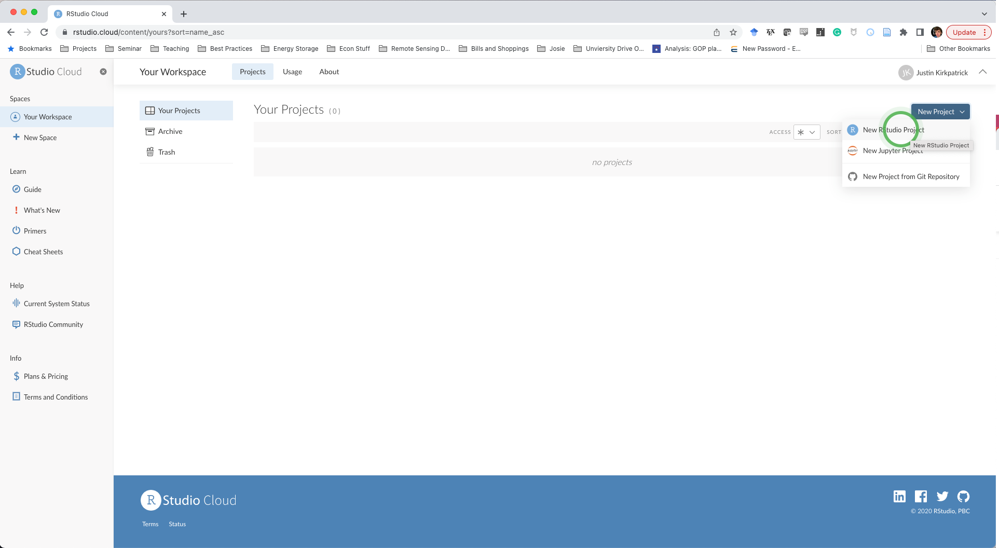
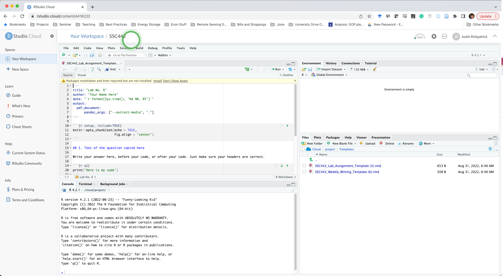
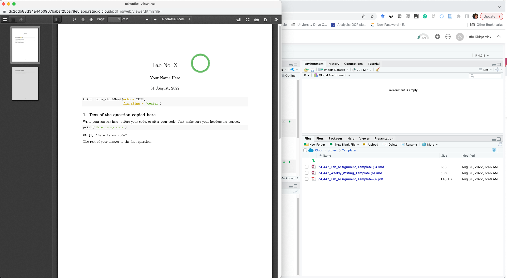

Setting up Posit.cloud
- Start by going to Posit.cloud and create a free account.
- Click “Your Workspace”
- In the top right corner, click on “New Project” and name it something like “SSC442”

- The “Files” tab in the lower-right pane shows your cloud project storage space. Let’s add a
templatesfolder and store the two course assignment templates there.
- Go to assignments, scroll down, and right-click on the Weekly Writing template and select “Save As…” and save it to your desktop
- Do the same for the Lab Assignment template. Clicking on the link will open the text of the file in a browser window and you cannot just copy the text into an R file.
- With the files on your computer, go back to RStudio.cloud and in the Files tab, click on “New Folder” and name it
templates - Upload the templates one at a time to the folder.
- Use the green up arrow to navigate the “Files” tab back to your main directory and create a folder for
Labsand one forWeekly Writings. - Open the Lab Assignment template
- At the top of the template in the upper-left pane, you’ll see a warning that RStudio needs to install some packages. Click “Install”

- After R finishes installing packages (less than a minute), click the “Knit” button on the toolbar.
- RMarkdown will need to install a few more packages. Click “Yes”.

- A pop-up window will open showing you the PDF of the rendered template. Congrats, you are ready to get to work!

Your RStudio.cloud version of RStudio will work just like a “local” install on a computer. Make sure you “Save As…” when you do your Lab or Weekly Writing assignments so that you don’t have to re-upload the templates. Keep a separate folder for each Lab inside the Labs to keep things clean in your workspace.